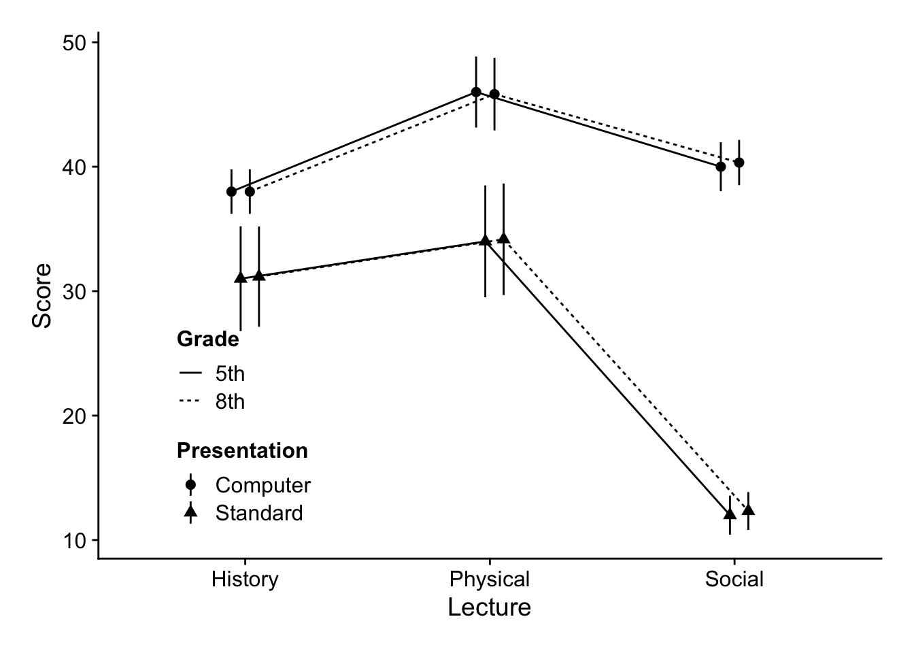
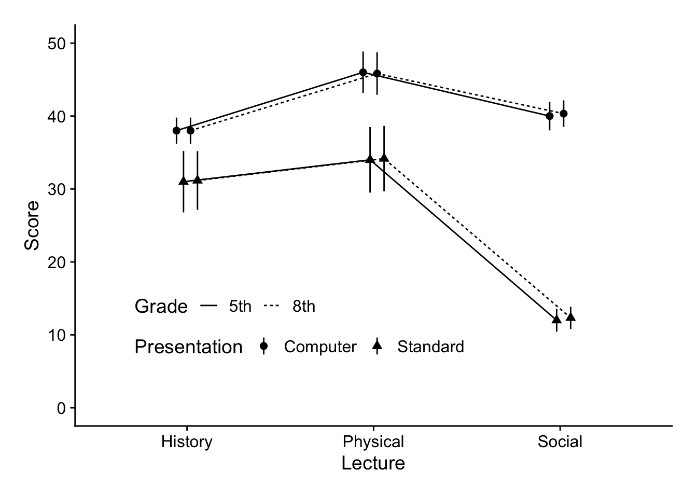
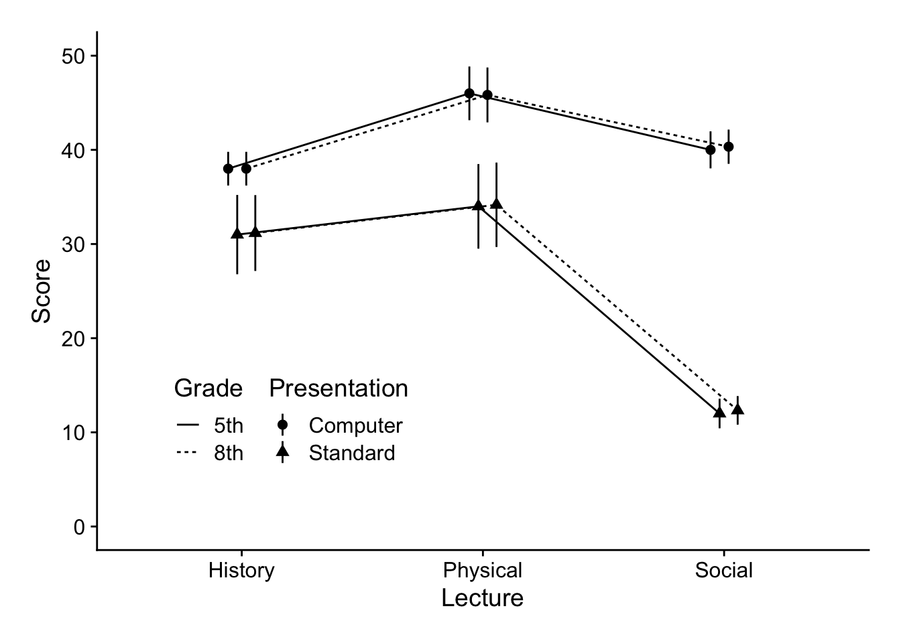
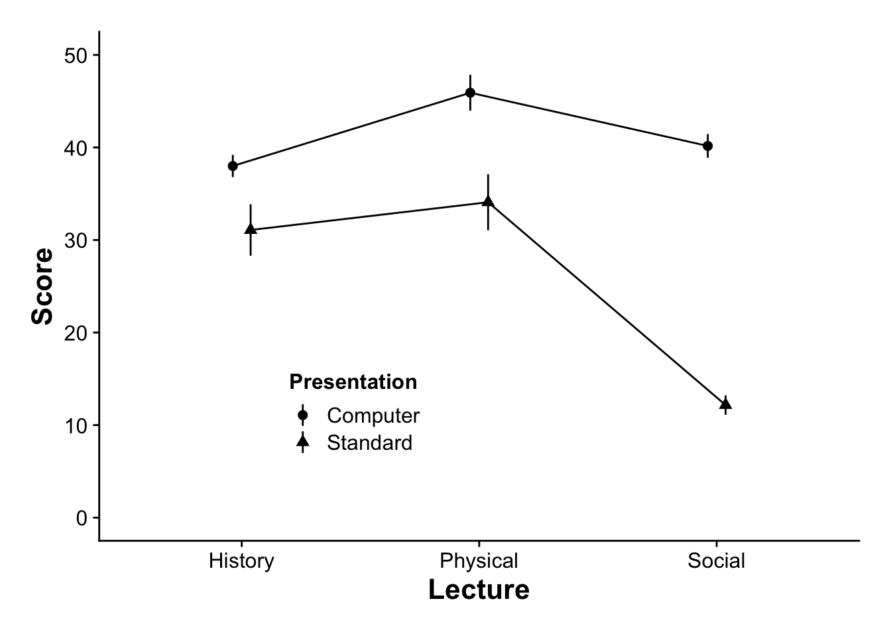
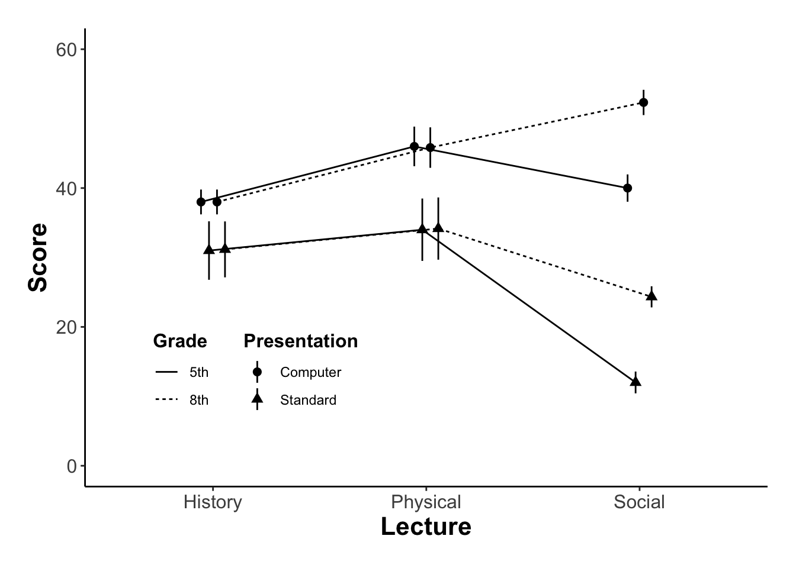
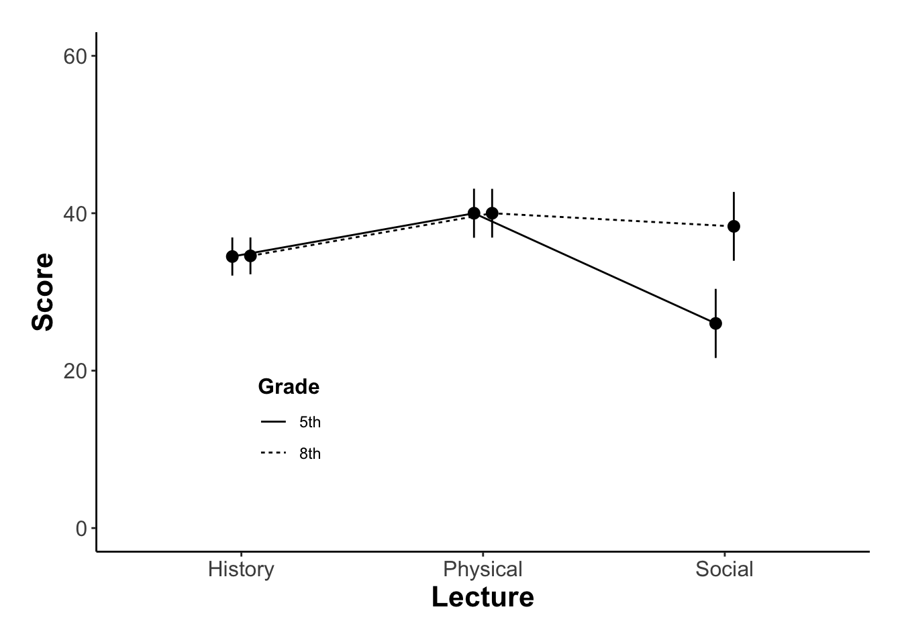
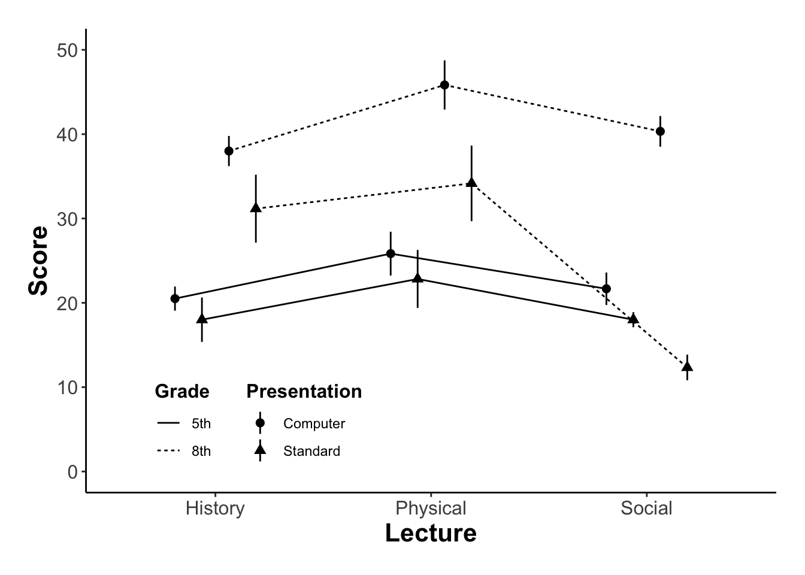

Dealing with Higher Order Factorial ANOVA
This walk-through is a continuation of our previous work with factorial ANOVA. If you haven’t already, please check the factorial ANOVA and Interaction vignettes. In truth, nothing terribly new is being introduced here; we are just ramping up the complexity of our ANOVA models. Whereas before we considered a scenario with just 2 factors, here we will consider a 3 factor ANOVA. For all practical purposes you typically do not want to go higher than a 3 or 4 factor ANOVA, simply because of the exponential increase in complexity. For example, consider below where each letter is an IV and the resulting tests in the full factorial omnibus ANOVA:
- 2 factor: a, b, a×b
- 3 factor: a, b, c, a×b, a×c, b×c, a×b×c
- 4 factor: a, b, c, d, a×b, a×c, a×d, b×c, b×d, c×d, a×b×c, a×b×d, a×c×d, b×c×d, a×b×c×d
- 5 factor: ummm, no… just don’t (unless you really want to)
Increasing the number of factors not only increases the practical difficulty of analysis, but more importantly, makes it more difficult to interpret your results. The primary culprit here is the potential presence of multiple interactions.
When dealing with interactions in a higher order factorial design you always start off with the highest order interaction. For example in the 3 factor case, if you have a 3-way interaction, that supersedes any other effects and interactions, and must be dealt with first. If there is no three-way interaction, then you can co about the business of addressing any two way interactions that are present.
Packages and data
Let’s load in our necessary packages, scripts and some data and try some examples. This write-up requires the following packages:
And now let’s re-acquaint ourselves with our familar example dataset, but with one new twist…
Background: Given the ease of access for new technologies and increasing enrollment demands, many grade schools are advocating that teachers switch over to E-courses, where students view an online, pre-recorded lecture on the course topic in lieu of sitting in a classroom in a live lecture. Given this push, a critical question remains regarding the impact of E-courses on primary school student outcomes. More it may be the case that certain subject content more readily lends itself to E-course presentations than other subjects. To address this question we tested students performance on a test one week after listening to the related lecture. Lectures were either experienced via online (Computer) or in a live classroom (Standard). In addition, the lecture content varied in topic (Physical science, Social science, History). Finally, to assess whether age had an impact on expected outcomes we assessed students in 5th and 8th grades.
Looking at the above we have a 2 (Grade: 5th, 8th) × 2 (Presentation: Computer, Standard) × 3 (Lecture: Physical, Social, History) design. Our omnibus ANOVA therefore will test for the following effects:
- Main Effects: Grade, Presentation, Lecture
- 2-way interactions: Grade × Presentation, Grade × Lecture, Lecture × Presentation
- 3-way interaction: Grade × Presentation × Lecture
EXAMPLE 1: no three-way interaction, single two way interaction
Let’s load in this data:
higherEx1 <- read_delim("https://raw.githubusercontent.com/tehrandavis/graduate_statistics/main/practice_datasets/ANOVA5_higherEx1.txt", delim = "\t")Rows: 72 Columns: 5
── Column specification ────────────────────────────────────────────────────────
Delimiter: "\t"
chr (3): Grade, Lecture, Presentation
dbl (2): Subject, Score
ℹ Use `spec()` to retrieve the full column specification for this data.
ℹ Specify the column types or set `show_col_types = FALSE` to quiet this message.# A tibble: 72 × 5
Subject Grade Lecture Presentation Score
<dbl> <chr> <chr> <chr> <dbl>
1 1 5th Physical Computer 53
2 2 5th Physical Computer 49
3 3 5th Physical Computer 47
4 4 5th Physical Computer 42
5 5 5th Physical Computer 51
6 6 5th Physical Computer 34
7 7 5th Physical Standard 44
8 8 5th Physical Standard 48
9 9 5th Physical Standard 35
10 10 5th Physical Standard 18
# ℹ 62 more rowsIt’s already in long format, but I should tell R that Grade, Lecture, and Presentation are factors:
First plot: 3 way interaction plot
One thing you may notice is since we have a more complex ANOVA, we have a more complex design with three factors we also have to construct a more complex plot. Whereas in the 2 factor case we could place one factor on the x-axis and group the other factor by line or shape or color; in the three factor case things become slightly more tricky.
One thing to consider is the logic of what we are doing with our plots. When we have two factors, say A & B, we are distinguishing between each level of B (by lines, shapes, colors) at each level of A (on the x-axis). In the 3 factor case where we have A,B, & C, we are distinguishing the B×C interaction (through the combination of shapes, lines, colors) on each level of A.
In the following plot, let’s place Lecture type along the x-axis. From here, we can create 2 groups of lines (each with 2 levels) representing the Grade × Presentation interaction. We note this by specifying the interaction in group of our baseline ggplot call:
From here, we can proceed as before. Note, however, depending on the complexity of your plot you may also need to specify the interaction in each stat_summary::aes() as necessary.
Below I am changing the shape by Presentation and the linetype by Grade. The entire call, including the line above is:
ggplot(higherEx1,mapping = aes(x = Lecture,y = Score, group=interaction(Presentation,Grade))) +
stat_summary(geom = "pointrange",fun.data = "mean_se",position = position_dodge(.15), aes(shape=Presentation)) +
stat_summary(geom = "line", fun="mean", position = position_dodge(.15), aes(linetype=Grade)) +
theme_cowplot() +
# renaming axies
xlab("Lecture") +
ylab ("Score") +
# adding whitespace around plot (optional)
theme(plot.margin=unit(c(.25,.25,.25,.25),"in")) +
# adjusting the legend
theme(
legend.title = element_text(size = 12, face = "bold"),
legend.position = c(.1,.25))
OK, not exactly the best plot. Let’s see if we can create some more space to work with by forcing the y-axis to go to 0, instead of cutting off at 10. There’s also a trick that we can use to stack our legend keys horizontally, rather than vertically
ggplot(higherEx1,mapping = aes(x = Lecture,y = Score, group=interaction(Presentation,Grade))) +
stat_summary(geom = "pointrange",fun.data = "mean_se",position = position_dodge(.15), aes(shape=Presentation)) +
stat_summary(geom = "line", fun="mean", position = position_dodge(.15), aes(linetype=Grade)) +
theme_cowplot() +
# renaming axies
xlab("Lecture") +
ylab ("Score") +
# adding whitespace around plot (optional)
theme(plot.margin=unit(c(.25,.25,.25,.25),"in")) +
# new additions / changes
coord_cartesian(ylim=c(0,50)) +
# direction to stack legend keys
theme(legend.direction = "horizontal",
legend.position = c(.1,.25))
alternatively, we could also just stack the legend boxes side by side:
ggplot(higherEx1,mapping = aes(x = Lecture,y = Score, group=interaction(Presentation,Grade))) +
stat_summary(geom = "pointrange",fun.data = "mean_se",position = position_dodge(.15), aes(shape=Presentation)) +
stat_summary(geom = "line", fun="mean", position = position_dodge(.15), aes(linetype=Grade)) +
theme_cowplot() +
# renaming axies
xlab("Lecture") +
ylab ("Score") +
# adding whitespace around plot (optional)
theme(plot.margin=unit(c(.25,.25,.25,.25),"in")) +
# new additions / changes
coord_cartesian(ylim=c(0,50)) +
# direction to stack legend boxes instead of keys
theme(legend.box = "horizontal",
legend.position = c(.1,.25))
NOTE: For what its work, we could also obviate the need for this complex of a plot, and just facet_wrap() by our third factor. For practice try taking the code above and faceting by ~Grade.
running the ANOVA:
From here we run the omnibus as usual:
omnibus_aov <- lm(Score~Lecture*Presentation*Grade, data = higherEx1)
omnibus_aov %>% sjstats::anova_stats()term | df | sumsq | meansq | statistic | p.value | etasq | partial.etasq | omegasq | partial.omegasq | epsilonsq | cohens.f | power
--------------------------------------------------------------------------------------------------------------------------------------------------------------
Lecture | 2 | 2330.361 | 1165.181 | 21.333 | < .001 | 0.204 | 0.416 | 0.193 | 0.361 | 0.194 | 0.843 | 1.000
Presentation | 1 | 4371.125 | 4371.125 | 80.029 | < .001 | 0.382 | 0.572 | 0.376 | 0.523 | 0.377 | 1.155 | 1.000
Grade | 1 | 0.347 | 0.347 | 0.006 | 0.937 | 0.000 | 0.000 | -0.005 | -0.014 | -0.005 | 0.010 | 0.051
Lecture:Presentation | 2 | 1460.083 | 730.042 | 13.366 | < .001 | 0.128 | 0.308 | 0.118 | 0.256 | 0.118 | 0.667 | 0.998
Lecture:Grade | 2 | 0.361 | 0.181 | 0.003 | 0.997 | 0.000 | 0.000 | -0.009 | -0.028 | -0.010 | 0.010 | 0.050
Presentation:Grade | 1 | 0.125 | 0.125 | 0.002 | 0.962 | 0.000 | 0.000 | -0.005 | -0.014 | -0.005 | 0.006 | 0.050
Lecture:Presentation:Grade | 2 | 0.083 | 0.042 | 0.001 | 0.999 | 0.000 | 0.000 | -0.009 | -0.029 | -0.010 | 0.005 | 0.050
Residuals | 60 | 3277.167 | 54.619 | | | | | | | | | In this case we only have Main effects for Lecture and Presentation, and a Lecture × Presentation interaction. Given this we can disregard Grade as its not contributing to any effects.
Replotting the 2-way interaction
In some cases it is advisable to re-plot the data factoring out Grade by removing Grade from baseline group= as well as any summary_stat::aes(), (essentially treating this if it was a 2 factorial design like last week). For the sake of your sanity, and your readers’ sanity) I would also suggest being consistent with how you present your conditions. For example, in the original plot, Presentation was differentiated by shape. To be consistent, we need to do the same here).
(You’ll note in the example below I’m also customing font size and weight ourely for personal aesthetics):
ggplot(higherEx1,mapping = aes(x = Lecture,y = Score, group=Presentation)) +
stat_summary(geom = "pointrange",fun.data = "mean_se",position = position_dodge(.15), aes(shape=Presentation)) +
stat_summary(geom = "line", fun="mean", position = position_dodge(.15), aes(shape=Presentation)) + theme_cowplot() + theme(
axis.title = element_text(size = 16, face = "bold", lineheight = .55),
axis.text = element_text(size = 12),
legend.title = element_text(size = 12, face = "bold"),
legend.position = c(.25,.25)) +
xlab("Lecture") +
ylab ("Score") +
theme(plot.margin=unit(c(.25,.25,.25,.25),"in")) +
coord_cartesian(ylim=c(0,50)) +
# stack legend boxes horizontally:
theme(legend.box = "horizontal")Warning in stat_summary(geom = "line", fun = "mean", position =
position_dodge(0.15), : Ignoring unknown aesthetics: shape
From here I would deal with the follow-ups as we did in our 2×3 example from the last write-up: Run the simple effects and any necessary posthocs, being sure to correct using the error terms from the omnibus ANOVA.
EXAMPLE 2: No three-way interaction, multiple main effects, multiple 2 way interactions:
Let’s load in a data set that is a little more complicated:
higherEx2 <- read_delim("https://raw.githubusercontent.com/tehrandavis/graduate_statistics/main/practice_datasets/ANOVA5_higherEx2.txt", delim = "\t")Rows: 72 Columns: 5
── Column specification ────────────────────────────────────────────────────────
Delimiter: "\t"
chr (3): Grade, Lecture, Presentation
dbl (2): Subject, Score
ℹ Use `spec()` to retrieve the full column specification for this data.
ℹ Specify the column types or set `show_col_types = FALSE` to quiet this message.plotting the data
ggplot(higherEx2,mapping = aes(x = Lecture,y = Score, group=interaction(Presentation,Grade))) +
stat_summary(geom = "pointrange",fun.data = "mean_se",position = position_dodge(.15), aes(shape=Presentation)) +
stat_summary(geom = "line", fun="mean", position = position_dodge(.15), aes(linetype=Grade)) + theme_classic() + theme(
axis.title = element_text(size = 16, face = "bold", lineheight = .55),
axis.text = element_text(size = 12),
legend.title = element_text(size = 12, face = "bold"),
legend.position = c(.25,.25)) +
xlab("Lecture") +
ylab ("Score") +
theme(plot.margin=unit(c(.25,.25,.25,.25),"in")) +
coord_cartesian(ylim=c(0,60)) +
# stack legend boxes horizontally:
theme(legend.box = "horizontal")
Looking at this plot its quite apparent that the pattern of results is different from Example 1. Perhaps most simply, there is a general shared pattern of effects for each of the shapes (Presentation) with the exception of the 8th Grade-Computer condition. For the remainder there is a dip for Social lectures, but in this one condition Social actually increases. Let’s run our ANOVA.
running the omnibus ANOVA:
omnibus_aov <- lm(Score~Lecture*Presentation*Grade, data = higherEx2)
omnibus_aov %>% sjstats::anova_stats()term | df | sumsq | meansq | statistic | p.value | etasq | partial.etasq | omegasq | partial.omegasq | epsilonsq | cohens.f | power
--------------------------------------------------------------------------------------------------------------------------------------------------------------
Lecture | 2 | 774.361 | 387.181 | 7.089 | 0.002 | 0.072 | 0.191 | 0.061 | 0.145 | 0.062 | 0.486 | 0.931
Presentation | 1 | 4371.125 | 4371.125 | 80.029 | < .001 | 0.405 | 0.572 | 0.398 | 0.523 | 0.400 | 1.155 | 1.000
Grade | 1 | 308.347 | 308.347 | 5.645 | 0.021 | 0.029 | 0.086 | 0.023 | 0.061 | 0.024 | 0.307 | 0.661
Lecture:Presentation | 2 | 1460.083 | 730.042 | 13.366 | < .001 | 0.135 | 0.308 | 0.124 | 0.256 | 0.125 | 0.667 | 0.998
Lecture:Grade | 2 | 604.361 | 302.181 | 5.532 | 0.006 | 0.056 | 0.156 | 0.046 | 0.112 | 0.046 | 0.429 | 0.854
Presentation:Grade | 1 | 0.125 | 0.125 | 0.002 | 0.962 | 0.000 | 0.000 | -0.005 | -0.014 | -0.005 | 0.006 | 0.050
Lecture:Presentation:Grade | 2 | 0.083 | 0.042 | 0.001 | 0.999 | 0.000 | 0.000 | -0.010 | -0.029 | -0.010 | 0.005 | 0.050
Residuals | 60 | 3277.167 | 54.619 | | | | | | | | | Our ANOVA reveals an abundance of results. There are main effects for each of our IVs. In addition there are two interaction effects: Lecture:Presentation and Lecture:Grade. Unless there is a strong theoretical reason not to (which I see none) we will need to examine each of these interactions in further detail.
testing the Lecture:Presentation interaction:
2-way interaction plot
We can begin by recreating our interaction plot, this time only focusing on the IVs that are of interest (those that are interacting). In this first case, they are Lecture and Presentation.
ggplot(higherEx2,mapping = aes(x = Lecture,y = Score, group=Presentation)) +
stat_summary(geom = "pointrange",fun.data = "mean_cl_normal",position = position_dodge(.15), aes(shape=Presentation)) +
stat_summary(geom = "line", fun="mean", position = position_dodge(.15), aes(shape=Presentation)) + theme_cowplot() + theme(
axis.title = element_text(size = 16, face = "bold", lineheight = .55),
axis.text = element_text(size = 12),
legend.title = element_text(size = 12, face = "bold"),
legend.position = c(.25,.25)) +
xlab("Lecture") +
ylab ("Score") +
theme(plot.margin=unit(c(.25,.25,.25,.25),"in")) +
coord_cartesian(ylim=c(0,60)) +
# stack legend boxes horizontally:
theme(legend.box = "horizontal")Warning in stat_summary(geom = "line", fun = "mean", position =
position_dodge(0.15), : Ignoring unknown aesthetics: shape
simple effect ANOVAs:
Provided what we see on this plot, it may make sense to first run a simple effects ANOVA for each Presentation and then run the appropriate follow-ups. I say this because the more obvious, and potentially easily interpret-able effects occur moving across the line series (i.e., lines trend up or down).
When testing for simple effects of Lecture on each Presentation type, we still need to include Grade in our analysis—this is to account for Grade’s contribution to our original model. Essentially we conduct a test for Lecture, Grade, and the Lecture by Grade interaction on each level of Presentation type. Using the template from the previous walkthroughs, this can be accomplished by simply telling R to run joint_tests separating the original model by Presentation.
Using emmeans::joint_tests():
Presentation = Computer:
model term df1 df2 F.ratio p.value
Lecture 2 60 4.739 0.0123
Grade 1 60 2.710 0.1049
Lecture:Grade 2 60 2.823 0.0673
Presentation = Standard:
model term df1 df2 F.ratio p.value
Lecture 2 60 15.715 <.0001
Grade 1 60 2.937 0.0917
Lecture:Grade 2 60 2.710 0.0747Both simple effects ANOVA of Lecture within Presentation were significant, suggesting that we should perform a post-hoc analyses of each:
NOTE: Results may be misleading due to involvement in interactionsPresentation = Computer:
contrast estimate SE df t.ratio p.value
History - Physical -7.92 3.02 60 -2.624 0.0292
History - Social -8.17 3.02 60 -2.707 0.0237
Physical - Social -0.25 3.02 60 -0.083 0.9962
Presentation = Standard:
contrast estimate SE df t.ratio p.value
History - Physical -3.00 3.02 60 -0.994 0.5833
History - Social 12.92 3.02 60 4.281 0.0002
Physical - Social 15.92 3.02 60 5.275 <.0001
Results are averaged over the levels of: Grade
P value adjustment: tukey method for comparing a family of 3 estimates The results of the Tukey post-hoc suggests that History scores are significantly less than the other two groups when considering only the Computer presentation. For the standard presentation, scores in the History and Physical lecture were greater than the Social lecture.
testing the Lecture:Grade interaction:
Now we do the same for the Lecture:Grade interaction. This time removing Presentation from our consideration.
2-way interaction plot
You’ll notice that in this interaction plot, and the plot above, I am using the shape/linetype conventions that I established in my original plot. This will make things much easier if I wind up comparing these plots to my 3-way plot. I know I’ve said this before, but ONE MORE TIME WITH FEELING!
ggplot(higherEx2,mapping = aes(x = Lecture,y = Score, group=Grade)) +
stat_summary(geom = "pointrange",fun.data = "mean_se",position = position_dodge(.15), aes(shape=Presentation)) +
stat_summary(geom = "line", fun="mean", position = position_dodge(.15), aes(linetype=Grade)) + theme_classic() + theme(
axis.title = element_text(size = 16, face = "bold", lineheight = .55),
axis.text = element_text(size = 12),
legend.title = element_text(size = 12, face = "bold"),
legend.position = c(.25,.25)) +
xlab("Lecture") +
ylab ("Score") +
theme(plot.margin=unit(c(.25,.25,.25,.25),"in")) +
coord_cartesian(ylim=c(0,60)) +
# stack legend boxes horizontally:
theme(legend.box = "horizontal")
simple effect ANOVAs:
Provided what we see on this plot, it may make the best sense to examine the pairwise differences in each Grade group by Lecture. Whereas in the previous interaction, the compelling changes occurred across lines, here what is more compelling is the presence/absence of gaps between the lines. In particular, while there are practically no differences due to Grade in the History or Physical Lectures, there is a larger gap in the Social condition.
Running these simple effects ANOVAs using emmeans:joint_tests(). Keep in mind, since we are parsing the Lecture:Grade interaction, be should only take a look at the effects of Grade on each of our Presentation levels. We can ignore the other output.
Lecture = History:
model term df1 df2 F.ratio p.value
Presentation 1 60 5.255 0.0254
Grade 1 60 0.001 0.9781
Presentation:Grade 1 60 0.001 0.9781
Lecture = Physical:
model term df1 df2 F.ratio p.value
Presentation 1 60 15.382 0.0002
Grade 1 60 0.000 1.0000
Presentation:Grade 1 60 0.003 0.9561
Lecture = Social:
model term df1 df2 F.ratio p.value
Presentation 1 60 86.123 <.0001
Grade 1 60 16.710 0.0001
Presentation:Grade 1 60 0.000 1.0000As anticipated from looking at the plot, there was a significant difference between our Grades in the Social group, but not the other two. Since there are only two levels of Grade we don’t deen to run any other post hocs (the \(F\) test is our comparison between means).
Main takeaways / write-up
It’s typically best to go back and look at all of your plots.
the main effect for
Presentationis meaningful: Regardless of what plays out on the other factors, students tended to perform better in the computer presentation. Best to report that.-
the
Lecture:Presentationinteraction resulted from the following:- in the Computer presentations scores were lowest in the History lecture (indifferent in other two)
- in the Standard presentations scores were lowest in the Social lecture (indifferent in the other two)
the
Lecture:Gradeinteraction resulted from the 5th graders performing worse than the eight graders in Social lectures; while performance was not different in the other two lectures.
With this in mind, an example write-up:
Our results revealed main effects for each of our factors, in addition to Lecture × Presentation \([F(2,60)=13.37, p<.001, \eta_p^2=.31]\) and Lecture × Grade interactions \([F(2,60)=5.53, p=.006, \eta_p^2=.16]\).
Considering the former interaction, students presented material via computer format tended to perform poorest from the History Lecture, compared to Physical and Social (Tukey HSD, p<.05). However, when material was presented in the standard format, students performed poorest in the Social condition (p<.05), while the other two were not different.
Considering the latter interaction, a detailed analysis of performance as a function of lecture revaled that 8th Graders performed better than their 5th grade counterparts only in the Social lecture, \(F(1,60) = 16.71, p < .001, \eta_p^2=0.21\).
In all conditions, students performed better when presented the material via computer compared to the standard presentation, \([F(2,60)=7.09, p=.002, \eta_p^2=.19]\) (see Figure 1).
EXAMPLE 3: OMG, multiple two way interactions and a nasty three-way!!!
Finally let’s take a look at some data that is all over the place:
higherEx3 <- read_delim("https://raw.githubusercontent.com/tehrandavis/graduate_statistics/main/practice_datasets/ANOVA5_higherEx3.txt", delim = "\t")Rows: 72 Columns: 5
── Column specification ────────────────────────────────────────────────────────
Delimiter: "\t"
chr (3): Grade, Lecture, Presentation
dbl (2): Subject, Score
ℹ Use `spec()` to retrieve the full column specification for this data.
ℹ Specify the column types or set `show_col_types = FALSE` to quiet this message.Plotting:
ggplot(higherEx3,mapping = aes(x = Lecture,y = Score, group=interaction(Presentation,Grade))) +
stat_summary(geom = "pointrange",fun.data = "mean_se",position = position_dodge(.5), aes(shape=Presentation)) +
stat_summary(geom = "line", fun="mean", position = position_dodge(.5), aes(linetype=Grade)) +
theme_classic() + theme(
axis.title = element_text(size = 16, face = "bold", lineheight = .55),
axis.text = element_text(size = 12),
legend.title = element_text(size = 12, face = "bold"),
legend.position = c(.25,.15)) +
xlab("Lecture") +
ylab ("Score") +
theme(plot.margin=unit(c(.25,.25,.25,.25),"in")) +
coord_cartesian(ylim=c(0,50)) +
# stack legend boxes horizontally:
theme(legend.box = "horizontal")
running the ANOVA:
omnibus_aov <- lm(Score~Lecture*Presentation*Grade, data = higherEx1)
omnibus_aov %>% sjstats::anova_stats()term | df | sumsq | meansq | statistic | p.value | etasq | partial.etasq | omegasq | partial.omegasq | epsilonsq | cohens.f | power
--------------------------------------------------------------------------------------------------------------------------------------------------------------
Lecture | 2 | 2330.361 | 1165.181 | 21.333 | < .001 | 0.204 | 0.416 | 0.193 | 0.361 | 0.194 | 0.843 | 1.000
Presentation | 1 | 4371.125 | 4371.125 | 80.029 | < .001 | 0.382 | 0.572 | 0.376 | 0.523 | 0.377 | 1.155 | 1.000
Grade | 1 | 0.347 | 0.347 | 0.006 | 0.937 | 0.000 | 0.000 | -0.005 | -0.014 | -0.005 | 0.010 | 0.051
Lecture:Presentation | 2 | 1460.083 | 730.042 | 13.366 | < .001 | 0.128 | 0.308 | 0.118 | 0.256 | 0.118 | 0.667 | 0.998
Lecture:Grade | 2 | 0.361 | 0.181 | 0.003 | 0.997 | 0.000 | 0.000 | -0.009 | -0.028 | -0.010 | 0.010 | 0.050
Presentation:Grade | 1 | 0.125 | 0.125 | 0.002 | 0.962 | 0.000 | 0.000 | -0.005 | -0.014 | -0.005 | 0.006 | 0.050
Lecture:Presentation:Grade | 2 | 0.083 | 0.042 | 0.001 | 0.999 | 0.000 | 0.000 | -0.009 | -0.029 | -0.010 | 0.005 | 0.050
Residuals | 60 | 3277.167 | 54.619 | | | | | | | | | O.M.F.G., everything is significant!!! What to do!!!
Remember, the first thing that we do is tackle the highest-order interaction. In this case we should tease-out the three-way. Again, we should look to our plot to help guide us in what to do. Looking at the plot it appears that different things are happening by Grade. The Presentation:Lecture lines tend to stay parallel for the 5th graders, but not as much for the 8th graders. At the same time the gaps between the two lines are different by grade. So, my advice would be to attack the 3-way interaction by looking at the individual Lecture:Presentation interactions on each Grade.
Fifth Graders, Lecture:Presentation interaction.
Grade = 5th:
model term df1 df2 F.ratio p.value
Lecture 2 60 10.930 0.0001
Presentation 1 60 40.443 <.0001
Lecture:Presentation 2 60 6.609 0.0025
Grade = 8th:
model term df1 df2 F.ratio p.value
Lecture 2 60 10.406 0.0001
Presentation 1 60 39.588 <.0001
Lecture:Presentation 2 60 6.757 0.0023You’ll note that our results include simple effects for Lecture and Presentation at each Grade for as their interaction. That said, there are no effects when looking at the 5th graders. However, the detailed Lecture:Presentation analysis for the 8th graders revealed both main effects and their interaction. We need to follow-up on this interaction in the 8th-grade data. In this case we would look at the effect of Lecture on each level of Presentation for the eighth graders.
To do this we first subset the data further, by both Grade and Presentation:
Grade = 5th, Presentation = Computer:
model term df1 df2 F.ratio p.value
Lecture 2 60 1.904 0.1579
Grade = 8th, Presentation = Computer:
model term df1 df2 F.ratio p.value
Lecture 2 60 1.777 0.1779
Grade = 5th, Presentation = Standard:
model term df1 df2 F.ratio p.value
Lecture 2 60 15.635 <.0001
Grade = 8th, Presentation = Standard:
model term df1 df2 F.ratio p.value
Lecture 2 60 15.386 <.0001Because there were no effects for 5th graders in the previous analysis, we can ignore that output. Focusing on the 8th grade output, we see that there is no effect for lecture type for 8th graders using the Computer presentation. However, the Standard presentation was significant. Following up on that:
Grade = 5th, Presentation = Computer:
contrast estimate SE df t.ratio p.value
History - Physical -8.00 4.27 60 -1.875 0.1548
History - Social -2.00 4.27 60 -0.469 0.8862
Physical - Social 6.00 4.27 60 1.406 0.3442
Grade = 8th, Presentation = Computer:
contrast estimate SE df t.ratio p.value
History - Physical -7.83 4.27 60 -1.836 0.1668
History - Social -2.33 4.27 60 -0.547 0.8485
Physical - Social 5.50 4.27 60 1.289 0.4069
Grade = 5th, Presentation = Standard:
contrast estimate SE df t.ratio p.value
History - Physical -3.00 4.27 60 -0.703 0.7626
History - Social 19.00 4.27 60 4.453 0.0001
Physical - Social 22.00 4.27 60 5.156 <.0001
Grade = 8th, Presentation = Standard:
contrast estimate SE df t.ratio p.value
History - Physical -3.00 4.27 60 -0.703 0.7626
History - Social 18.83 4.27 60 4.414 0.0001
Physical - Social 21.83 4.27 60 5.117 <.0001
P value adjustment: tukey method for comparing a family of 3 estimates Again, this output give us a lot of info, BUT all we should focus on is the section of interect, in this case 8th Grade, Standard Presentation or the last section. Here, scores for the Social test were less than the Physical and History.
Constructing a narrative:
Given these results, what narrative do you think you can tell? Remember use the plots to unpack what the results are telling you. Our results focused on differences in the Lecture:Presentation analysis for each grade. I would recommend that your story start there. Something to the effect of Lecture and Presentation interact for 8th graders but not 5th graders.
To remind ourselves:
Main effects for Lecture, Presentation, and Grade
Two way interactions
Three-way interaction that we focus on
-
The results of the 3-way interaction, by Grade:
- 5th graders = no effects
- 8th graders = Lecture × Presentation interaction, where there was a null effect for Lecture on the Computer presentation, but an effect for Lecture on the Standard Presentation.
Now the narrative:
… to answer this question we conducted a 2 (Grade) × 2 (Presentation) × 3 (Lecture) between effects ANOVA. Our ANOVA revealed a three-way, Grade × Presentation × Lecture type interaction, \(F\)(2, 60) = 3.87, \(p\) = .03, \(\eta_p^2\) = .11. To address this interaction we conducted separate Presentation × Lecture ANOVA for each Grade. Our results for 5th graders showed no effects nor an interaction (\(p\) > .05). For 8th graders, we found an Presentation × Lecture interaction, \(F\)(2, 60) = 8.61, \(p\) < .001. While there were no differences due to Lecture type for 8th graders presented information via computer (\(p\) > .05), 8th graders in the Standard presentation, \(F\)(2, 60) = 19.61, \(p\) < .001 tended to perform worse for the Social lecture (\(M\) ± \(SD\) = 12.33 ± 3.72) than for the History (31.17 ± 9.87) and Physical (34.17 ± 10.98) lectures (Tukey HSD, \(p\) < .05).
Now imagine trying to deal with a FOUR-WAY INTERACTION!!!! SHEESH!!!
On to the next one!